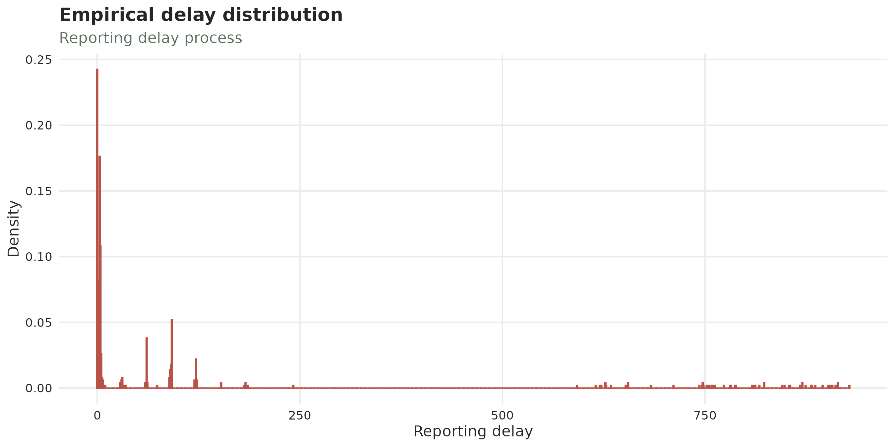
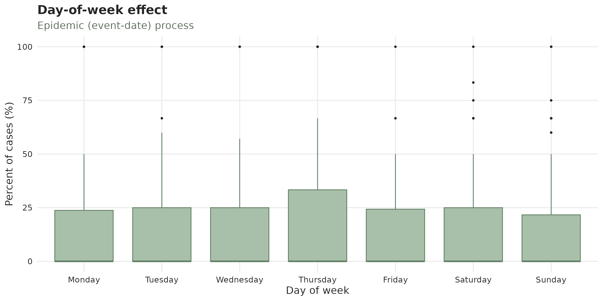
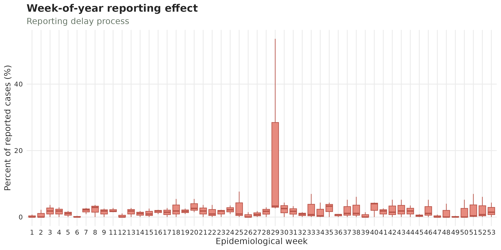
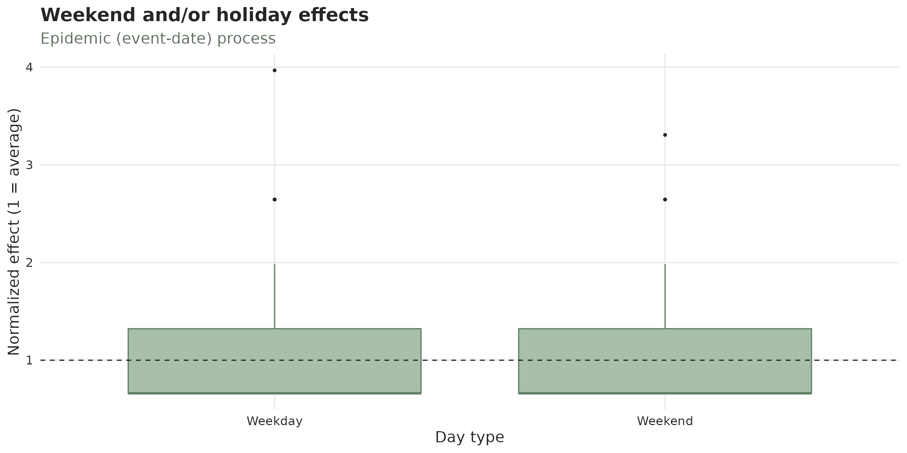
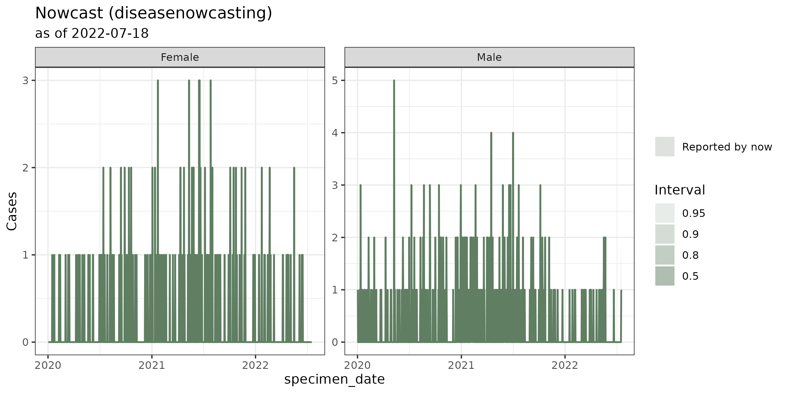
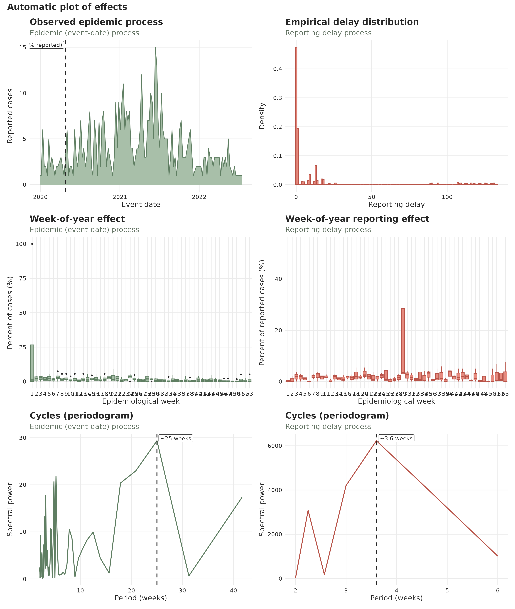
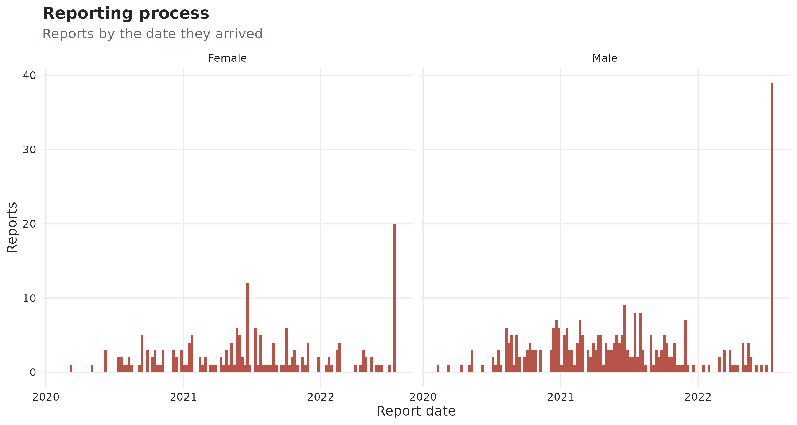
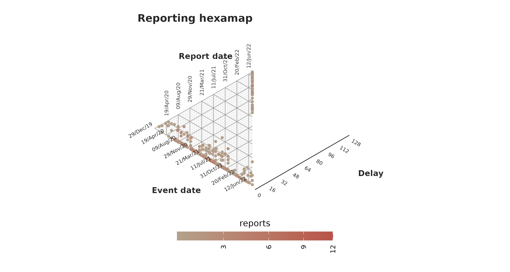
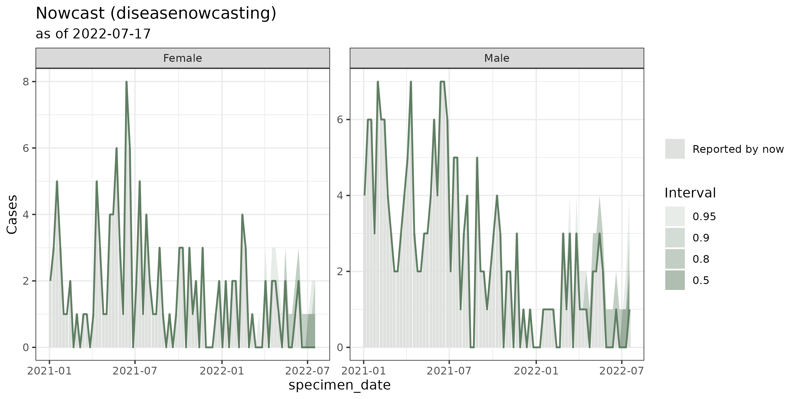
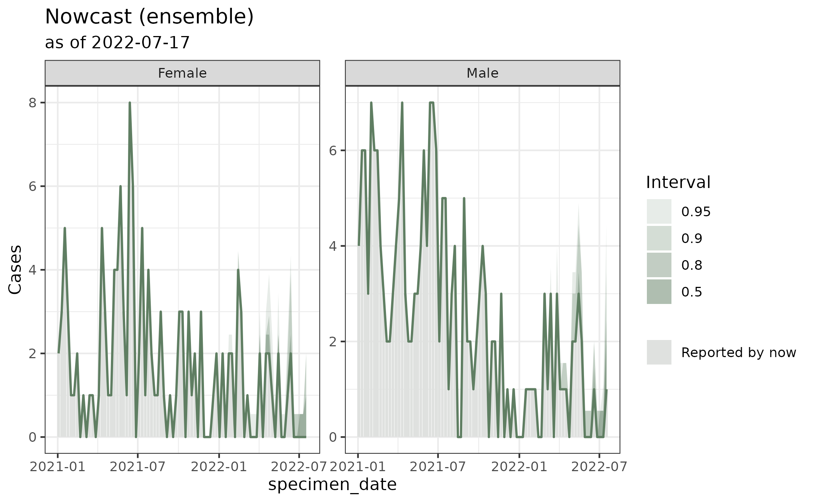

The nowcasting workflow: hospital-acquired infections in Bucaramanga, Colombia
Source:vignettes/articles/example.Rmd
example.RmdThis article is an end-to-end walk-through of the
tbl.now workflow on a real, deliberately
unpolished dataset. We will:
-
Build a
tbl_nowfrom a messy surveillance extract and show how todiagnose()possible data errors. - Clean what it reported: duplicate records, missing dates, etc.
-
Look at the data with
autoplot(), and thesummary()functions. - Describe the behaviour of the reporting delay.
- Attach temporal effects to a model using the data.
- Nowcast with two different engines using everything we found.
We’ll start the process by nowcasting with two dates (event and report dates) and then we’ll focus on nowcasting with three dates (event, report, and revision dates).
Let’s start by calling the libraries:
The data
hai_bucaramanga is a raw line list of
healthcare-associated infections (IAAS, Infecciones
Asociadas a la Atención en Salud) notified in the county of
Bucaramanga, Sandander, Colombia, as published by the county. Each row
is one infection: a specimen taken from a hospitalised patient, the
laboratory result, and the microorganism isolated.
data(hai_bucaramanga)
hai_bucaramanga#> # A tibble: 6 × 13
#> id specimen_date received_date report_date specimen test microorganism sex age_group case_type final_condition icu_type institution
#> <int> <date> <date> <date> <fct> <fct> <chr> <fct> <ord> <fct> <fct> <fct> <int>
#> 1 1318 2023-01-19 NA 2023-01-22 Whole blood Blood culture Pseudomonas aeruginosa Male 40-49 Laborator… Alive Adult 1
#> 2 1319 2023-01-24 NA 2023-01-28 Urine Urine culture Serratia marcescens Male 60-69 Laborator… Alive Adult 1
#> 3 1320 NA NA NA NA NA NA Male 70+ Clinicall… Alive Adult 5
#> 4 1321 2023-01-29 NA 2023-01-31 Urine Urine culture Klebsiella pneumoniae Male 60-69 Laborator… Alive Adult 1
#> 5 1322 2023-01-19 NA 2023-01-20 Urine Urine culture Escherichia coli Male 70+ Laborator… Alive Adult 6
#> # ℹ 1 more rowFor our example, six columns matter:
-
id— a unique patient identifier. -
specimen_date— the event date, when the sample was taken. -
report_date— the report date, when the laboratory issued the result. -
sex- the sex of the individual.
For the tutorial, we will do perform a nowcast assuming we are standing on July 18th 2022. For that purpose we filter our data to what it would have looked like:
hai_bucaramanga <- hai_bucaramanga |>
filter((is.na(specimen_date) | specimen_date <= ymd("2022/07/18")),
(is.na(report_date) | report_date <= ymd("2022/07/18")))For this tutorial we are keeping those events that have missing
dates. That is what the is.na() section on the left side of
the filter is doing as we keep either cases by July 18th 2022 or
missing.
1. Initial data cleaning
In this tutorial we show how to discover several anomalies in the
data as well as several modeling indicators. We suggest, however, that
before transforming the dataset into a tbl_now you use
traditional data analysis tools to clean the data first. Here we’ll just
select the columns that matter to us and move onto the
tbl_now capabilities. However if you already have a
pipeline for cleaning and preparing your data this is where you would do
it as we’ll see the tbl_now diagnostics don’t cover
everything.
#We keep only the columns of interest
hai_bucaramanga <- hai_bucaramanga |>
select(id, specimen_date, report_date, sex)2. Building the tbl_now
We’ll create the tbl_now() object. For the beginning of
the example, we will declare two dates (specimen_date for
the event and report_date) for the report. We’ll further
specify that the data is in line-list format (i.e. each row is
a case), and stratify by sex.
hai_bucaramanga <- hai_bucaramanga |>
tbl_now(
event_date = specimen_date,
report_date = report_date,
strata = sex,
data_type = "linelist",
event_units = "days",
report_units = "days"
)
#> Warning: 363 rows have NA values in the report_date column "report_date".
#> ℹ A row with no report date cannot be placed on the reporting triangle.
#> Warning: 314 rows have NA values in the event_date column "specimen_date".
#> ℹ A row with no event date cannot be placed on the reporting triangle.
#> Warning: 48 rows have a `report_date` before `event_date`
#> ℹ A negative reporting delay is not a delay; the two date columns may be swapped, or the rows may be data-entry errors.
#> Warning: 304 rows have NA values in the event and report date columns: "specimen_date" and "report_date".
#> ℹThe tbl.now() automatically fires several warnings.
Let’s take a look!
The tbl.now() package also considers the possibility of
a third revision_date where reports that have already been
submitted by report_date are either confirmed
or rejected (or maybe just one of those). We show more
diagnostics for such an example in the article
on diagnosing a tbl.now().
3. What is wrong?
These same warnings can also be accessed with the
diagnose() function which returns the warnings as well as
additional notes:
diagnose(hai_bucaramanga)
#> ── Diagnosis of a <tbl_now> ────────────────────────────────────────────────────────────────────────────────────────────────────────────────────────────────────
#> 4 warnings, 8 notes, 12 passed, 5 skipped.
#>
#> Warnings (4)
#> ! missing/report_date: 363 rows have NA values in the report_date column "report_date".
#> → A row with no report date cannot be placed on the reporting triangle.
#> ! missing/specimen_date: 314 rows have NA values in the event_date column "specimen_date".
#> → A row with no event date cannot be placed on the reporting triangle.
#> ! ordering/event_to_report: 48 rows have a `report_date` before `event_date`
#> → A negative reporting delay is not a delay; the two date columns may be swapped, or the rows may be data-entry errors.
#> ! simultaneously missing/event and report dates: 304 rows have NA values in the event and report date columns: "specimen_date" and "report_date".
#> →
#>
#> Notes (8)
#> ℹ declarations/undeclared: 1 column "id" is not declared as strata or covariates.
#> → Declare it with `strata = ` to model it separately, or let `to_count()` pool it away -- which is what the `tbl_now_to_()` converters do.
#> ℹ now/now_gap_event [Female]: The last event date is 32 days before now ("2022-07-18").
#> → Everything in that window is still arriving; it is what a nowcast is for, and it is also what makes the last points of any plot look like a decline.
#> ℹ now/now_gap_report [Female]: The last report date is 10 days before now ("2022-07-18").
#> ℹ strata/size [Female]: The smallest stratum is "Female" with 329 cases, 38.6% of the total.
#> ℹ strata/sparsity [Female]: The sparsest stratum is "Female": 768 of the 929 days between the minimum event (NA) and the now (2022-07-18) carry no cases at all (82.7%, against 63% pooled over every stratum).
#> → A stratum that is mostly zeros is the one a per-stratum fit will struggle with; pooling it is often better than fitting it. When every stratum is mostly zeros the grid is finer than the data -- `aggregate_time_units()` coarsens it.
#> ℹ truncation/event_date [Female]: 10 event dates are younger than the 95th percentile of the delay, so their counts are still filling in; an estimated 10.6% of their eventual total has not arrived.
#> → This is right-truncation, and it is the reason to nowcast rather than a defect. Cut the series at "2022-03-20" to describe it instead.
#> ℹ truncation/event_date [Male]: 15 event dates are younger than the 95th percentile of the delay, so their counts are still filling in; an estimated 25.5% of their eventual total has not arrived.
#> ℹ truncation/event_date: 24 event dates are younger than the 95th percentile of the delay, so their counts are still filling in; an estimated 20.5% of their eventual total has not arrived.
#>
#> ✔ 12 passed: declarations/temporal_effects, missing/sex, now/event_date, now/now_gap_event, now/now_gap_report, now/report_date, units/declared, units/delay, units/event_grid, and units/report_grid
#> ─ 5 skipped: duplicates/key, negatives/count, ordering/event_to_revision, ordering/report_to_revision, and strata/pending
#>
#> ℹ 29 findings. Use `dplyr::filter()` or `tibble::as_tibble()` for the table.Let’s see what they identify.
The warnings
In general the warnings will look for missing data within the dates and the strata or for violations of the nowcasting hypotheses (for example reports that “see the future” and identify an event before it happens!). In our case, specifically we identify missing dates in both the report and the event as well as some reports that have incorrect dates.
There is no solution that works in all cases for these problems and oftentimes the ideal solution is to identify the reason for the misingness. Here we posit some approaches for the warnings:
- For simultaneosuly missing event and report dates there is nothing one can do. In those cases we don’t know when something happened (to add to the epidemic process) or when it was reported (to add to the delay process). Hence we remove those rows.
#Remove those that have both dates missing
hai_bucaramanga <- hai_bucaramanga |>
filter(!(is.na(report_date) & is.na(specimen_date)))-
For the rows with missing reports, we can censor them
above. This will tell the models in diseasenowcasting
that the measurement is not exact; instead, that we know the report
arrived before a certain date though we don’t know that exact
date in particular. We can do this because if we are seeing the reports
today then we know that at most they took until
today to arrive. This censoring will add a column
.is_censored_reportwhich will indicate that that report is censored.
When calling the function we specify that the ones we are censoring are the missing values and that the date they should input is “2022/10/18” which corresponds to the date of the nowcast in this example.
hai_bucaramanga <- hai_bucaramanga |>
censor_reports(is.na(report_date), to_report = as.Date("2022/07/18"))-
For the delays before the reports we visualize the
data. Doing a quick analysis we see that its a date formatting
issue. You can see in the first entries that the specimen date is in
format
year-day-month(read withlubridate::ydm()) while thereport_dateandreceived_dateis in formatyear-month-day(read withlubridate::ymd()) .
hai_bucaramanga |> filter(report_date < specimen_date)
#> # A tibble: 48 × 8
#> # Data type: "linelist"
#> # Frequency: Event: `days` | Report: `days`
#> id specimen_date report_date sex .is_censored_report .event_num .report_num .delay
#> <int> <date> <date> <fct> <lgl> <dbl> <dbl> <dbl>
#> [...] [event_date] [report_date] [strata] [is_censored_report] [...] [...] [...]
#> 1 590 2020-11-07 2020-07-21 Female FALSE 310 201 -109
#> 2 613 2020-10-08 2020-08-13 Male FALSE 280 224 -56
#> 3 622 2020-08-28 2020-01-09 Male FALSE 239 7 -232
#> 4 623 2020-08-28 2020-03-09 Female FALSE 239 67 -172
#> 5 626 2020-08-30 2020-02-09 Female FALSE 241 38 -203
#> # ────────────────────────────────────────────────────────────────────────────────────────────────────────────────────────────────────────────────────────────────
#> # Now: 2022-07-18 | Event date: "specimen_date" | Report date: "report_date"
#> # left-censored indicator: ".is_censored_report"
#> # Strata: "sex"
#> # ────────────────────────────────────────────────────────────────────────────────────────────────────────────────────────────────────────────────────────────────
#> # ℹ 43 more rowsWe can correct the date format to fix this issue:
hai_bucaramanga <- hai_bucaramanga |>
mutate(specimen_date = if_else(specimen_date > report_date,
ydm(as.character(specimen_date)),
ymd(as.character(specimen_date))))- Currently there is nothing we can do for the cases were the event date is unknown. Hence we just document them and we’ll remove from the dataset given that they represent such a small percent (5.6569343%).
Re-running diagnose() confirms we solved this
issues:
diagnose(hai_bucaramanga)
#> ── Diagnosis of a <tbl_now> ────────────────────────────────────────────────────────────────────────────────────────────────────────────────────────────────────
#> 7 notes, 20 passed, 5 skipped.
#>
#> Notes (7)
#> ℹ declarations/undeclared: 1 column "id" is not declared as strata or covariates.
#> → Declare it with `strata = ` to model it separately, or let `to_count()` pool it away -- which is what the `tbl_now_to_()` converters do.
#> ℹ now/now_gap_event [Female]: The last event date is 32 days before now ("2022-07-18").
#> → Everything in that window is still arriving; it is what a nowcast is for, and it is also what makes the last points of any plot look like a decline.
#> ℹ strata/size [Female]: The smallest stratum is "Female" with 195 cases, 37.7% of the total.
#> ℹ strata/sparsity [Female]: The sparsest stratum is "Female": 777 of the 929 days between the minimum event (2020-01-02) and the now (2022-07-18) carry no cases at all (83.6%, against 64.5% pooled over every stratum).
#> → A stratum that is mostly zeros is the one a per-stratum fit will struggle with; pooling it is often better than fitting it. When every stratum is mostly zeros the grid is finer than the data -- `aggregate_time_units()` coarsens it.
#> ℹ truncation/event_date [Female]: 140 event dates are younger than the 95th percentile of the delay, so their counts are still filling in; an estimated 76.8% of their eventual total has not arrived.
#> → This is right-truncation, and it is the reason to nowcast rather than a defect. Cut the series at "2020-05-01" to describe it instead.
#> ℹ truncation/event_date [Male]: 204 event dates are younger than the 95th percentile of the delay, so their counts are still filling in; an estimated 71.7% of their eventual total has not arrived.
#> ℹ truncation/event_date: 300 event dates are younger than the 95th percentile of the delay, so their counts are still filling in; an estimated 74.7% of their eventual total has not arrived.
#>
#> ✔ 20 passed: declarations/temporal_effects, missing/.is_censored_report, missing/report_date, missing/sex, missing/specimen_date, now/event_date, now/now_gap_event, now/now_gap_report, now/report_date, ordering/event_to_report, simultaneously missing/event and report dates, units/declared, units/delay, units/event_grid, and units/report_grid
#> ─ 5 skipped: duplicates/key, negatives/count, ordering/event_to_revision, ordering/report_to_revision, and strata/pending
#>
#> ℹ 32 findings. Use `dplyr::filter()` or `tibble::as_tibble()` for the table.The notes
The notes convey additinal information that, at a glance, can tell you whether something needs to be corrected in your data.
It helps you know that you have columns that are not strata or covariates (in case you forgot to declare them!):
declarations/undeclared: 3 columns "id", "received_date", and "microorganism" are not declared as strata or covariates.It quantifies how much time has happened between the last observation and the now for each strata:
now/now_gap_event [Female]: The last event date is 32 days before now ("2022-07-18").It also tells you how what is the smallest stratum (in case you have strata with so few observations you need to collapse them into another one):
strata/size [Female]: The smallest stratum is "Female" with 195 cases, 37.7% of the total.And how sparse your data is:
strata/sparsity [Female]: The sparsest stratum is "Female": 777 of the 929 "days" between the minimum event (2020-01-02) and the now (2022-07-18) carry no cases at all (83.6%, against 64.5% pooled over every stratum).This is particularly useful for triangle-based methods that require to fill with zeroes the whole reporting triangle.
4. More cleaning
Besides the diagnose() one always has to do some
additional cleaning of datasets. One particular issue is for repeated
rows; that is when an individual is registered twice in the dataset for
the same disease at the same exact times.
Here we can see that the same individuals id are
sometimes repeated:
hai_bucaramanga |>
count(id, report_date, specimen_date) |>
filter(n > 1) |>
as_tibble()
#> Warning: Dropping `tbl_now` attributes and converting to `tibble`
#> Warning: Dropped protected column(?s): ".is_censored_report", ".event_num", ".report_num", and ".delay". Returning a
#> `tibble`
#> # A tibble: 18 × 4
#> id report_date specimen_date n
#> <int> <date> <date> <int>
#> 1 1225 2022-05-16 2022-05-13 2
#> 2 1226 2022-05-18 2022-05-18 2
#> 3 1227 2022-05-18 2022-05-17 2
#> 4 1228 2022-05-19 2022-05-17 2
#> 5 1229 2022-05-20 2022-05-17 2
#> # ℹ 13 more rowsWe can use dplyr::distinct() to remove them without
losing information:
hai_bucaramanga <- hai_bucaramanga |> distinct()5. Temporal effects
Temporal covariates can be added to a tbl_now so that we
can describe their effect or use them for nowcasting. They can be
specified via the temporal_effects() function. It can add
holidays, weekends, day of the week effects and more. For the purpose of
this tutorial we will add the weekends and check whether there is a
weekend effect or not:
temporal_effects(weekend = TRUE)
#> ── Temporal Effects ────────────────────────────────────────────────────────────────────────────────────────────────────────────────────────────────────────────
#> The following effects are in place:
#> • "weekend"You can add the effects to the tbl_now() with the
add_temporal_effects() function:
hai_bucaramanga <- hai_bucaramanga |>
add_temporal_effects(t_effects = temporal_effects(weekend = TRUE))
hai_bucaramanga
#> # A tibble: 499 × 8
#> # Data type: "linelist"
#> # Frequency: Event: `days` | Report: `days`
#> id specimen_date report_date sex .is_censored_report .event_num .report_num .delay
#> <int> <date> <date> <fct> <lgl> <dbl> <dbl> <dbl>
#> [...] [event_date] [report_date] [strata] [is_censored_report] [...] [...] [...]
#> 1 528 2020-10-01 2022-07-18 Male TRUE 273 928 655
#> 2 529 2020-10-01 2022-07-18 Male TRUE 273 928 655
#> 3 530 2020-01-23 2022-07-18 Female TRUE 21 928 907
#> 4 531 2020-07-01 2022-07-18 Male TRUE 181 928 747
#> 5 532 2020-07-01 2022-07-18 Male TRUE 181 928 747
#> # ────────────────────────────────────────────────────────────────────────────────────────────────────────────────────────────────────────────────────────────────
#> # Now: 2022-07-18 | Event date: "specimen_date" | Report date: "report_date"
#> # left-censored indicator: ".is_censored_report"
#> # Strata: "sex"
#> # T. effects (lazy): [event_date] weekend
#> # ────────────────────────────────────────────────────────────────────────────────────────────────────────────────────────────────────────────────────────────────
#> # ℹ 494 more rowsThe temporal effect gets added lazily. You can use
compute_temporal_effects() to show it as a column in case
you require it (see them at the end of the tbl_now).
hai_bucaramanga |> compute_temporal_effects()
#> # A tibble: 499 × 9
#> # Data type: "linelist"
#> # Frequency: Event: `days` | Report: `days`
#> id specimen_date report_date sex .is_censored_report .event_num .report_num .delay .event_weekend
#> <int> <date> <date> <fct> <lgl> <dbl> <dbl> <dbl> <int>
#> [...] [event_date] [report_date] [strata] [is_censored_report] [...] [...] [...] [t_effect]
#> 1 528 2020-10-01 2022-07-18 Male TRUE 273 928 655 0
#> 2 529 2020-10-01 2022-07-18 Male TRUE 273 928 655 0
#> 3 530 2020-01-23 2022-07-18 Female TRUE 21 928 907 0
#> 4 531 2020-07-01 2022-07-18 Male TRUE 181 928 747 0
#> 5 532 2020-07-01 2022-07-18 Male TRUE 181 928 747 0
#> # ────────────────────────────────────────────────────────────────────────────────────────────────────────────────────────────────────────────────────────────────
#> # Now: 2022-07-18 | Event date: "specimen_date" | Report date: "report_date"
#> # left-censored indicator: ".is_censored_report"
#> # Strata: "sex"
#> # T. effects: [event_date] weekend
#> # T. effect cols: ".event_weekend"
#> # ────────────────────────────────────────────────────────────────────────────────────────────────────────────────────────────────────────────────────────────────
#> # ℹ 494 more rows6. Looking at the data
autoplot() draws a diagnostic grid with the panels in
green describing the epidemic process and the red ones,
the reporting process.
autoplot(hai_bucaramanga)
Four things stand out, and each of them changes a modelling decision later.
The epidemic curve is extremely sparse. There are only a handful of cases a year with most of the times 0 or 1 cases being reported.
plot_epidemic_process(hai_bucaramanga)
Note This is the same sparcity the
notein thediagnostic()function gave us.
The delay distribution has some extreme delays. This is the most consequential feature of the dataset, so it is worth its own plot:
plot_delay_distribution(hai_bucaramanga)
A lot of results are reported way after 500 days!
There doesn’t seem to be a day-of-the-week effect In both reports and events there is no aparent day of the week effect.
plot_day_of_week_effects(hai_bucaramanga)
One week had a lot of reports Epiweek 29 is an anomaly in the amount of reports it seems to have. This would warrant further investigation.
plot_week_of_year_effects(hai_bucaramanga, type = "report")
There doesn’t seem to be a weekend effect either In both reports and events there is no aparent effect of a weekend.
plot_weekend_effects(hai_bucaramanga)
7. Summarising the data
The summary() of a tbl_now quantifies what
we see in the plots. You can either call summary() all at
once:
summary(hai_bucaramanga) or as we do here call each of the summaries we are going to discuss
(see ?nowcast_summary_components for the whole list).
We can start with the delays. Here we can see that up until the 3rd
quartile (q75) delays are less than 100 days but then they
explode by the 90th quantile (q90):
delay_summary(hai_bucaramanga)
#> ── Summary of a <tbl_now> ──────────────────────────────────────────────────────────────────────────────────────────────────────────────────────────────────────
#> 3 rows in 1 component; strata: "Female" and "Male".
#>
#> delay
#> n = (event, report) cells; total = cases
#> quantity stratum n total mean sd min q25 q50 q75 q90 max
#> <chr> <chr> <int> <dbl> <dbl> <dbl> <dbl> <dbl> <dbl> <dbl> <dbl> <dbl>
#> 1 event_to_report all 438 499 107. 243. 0 1 3 89 627 928
#> 2 event_to_report Female 170 188 89.3 228. 0 2 3 35 186 914
#> 3 event_to_report Male 268 311 118. 252. 0 0 4 91 634 928
#>
#> ℹ Use `dplyr::filter()` or `tibble::as_tibble()` for the full schema.The zero_run_summary() quantifies the sparcity by
counting how many days with continuous zeroes happened for either the
event or the report dates. That is, it measures the distribution of days
of continuous zeroes. You can see that usually there are on average 3.06
continuous zeroes before a case. However there have been runs of 25
continuous days with no cases (continuous zeroes) until one case:
zero_run_summary(hai_bucaramanga)
#> ── Summary of a <tbl_now> ──────────────────────────────────────────────────────────────────────────────────────────────────────────────────────────────────────
#> 3 rows in 1 component; strata: "Female" and "Male".
#>
#> zero_run
#> n = runs of consecutive zero dates; total = zero dates in those runs
#> quantity stratum n total mean sd min q25 q50 q75 q90 max
#> <chr> <chr> <int> <dbl> <dbl> <dbl> <dbl> <dbl> <dbl> <dbl> <dbl> <dbl>
#> 1 event_date all 196 599 3.06 3.29 1 1 2 4 6 25
#> 2 event_date Female 123 777 6.32 6.31 1 2 4 8 13 32
#> 3 event_date Male 159 703 4.42 4.87 1 1 3 6 9 29
#>
#> ℹ Use `dplyr::filter()` or `tibble::as_tibble()` for the full schema.The composition block shows that there are way less females than males. Which, again was already observed in the notes as the smaller stratum:
prop_strata(hai_bucaramanga)
#> ── Summary of a <tbl_now> ──────────────────────────────────────────────────────────────────────────────────────────────────────────────────────────────────────
#> 2 rows in 1 component.
#>
#> composition
#> n = (event, report) cells in the category; total = cases in the category
#> quantity n total prop
#> <chr> <int> <dbl> <dbl>
#> 1 strata = Female 170 188 0.377
#> 2 strata = Male 268 311 0.623
#>
#> ℹ Use `dplyr::filter()` or `tibble::as_tibble()` for the full schema.Finally the cases per date shows how many cases on average occur per date-axis. That is on average how many cases there are per event date or per report date. In this case we can see that at least half of the dates have zero cases:
cases_per_date(hai_bucaramanga)
#> ── Summary of a <tbl_now> ──────────────────────────────────────────────────────────────────────────────────────────────────────────────────────────────────────
#> 6 rows in 1 component; strata: "Female" and "Male".
#>
#> cases
#> n = dates on the grid; total = cases
#> quantity stratum n total mean sd min q25 q50 q75 q90 max prop_zero
#> <chr> <chr> <int> <dbl> <dbl> <dbl> <dbl> <dbl> <dbl> <dbl> <dbl> <dbl> <dbl>
#> 1 per_event_date all 929 499 0.537 0.877 0 0 0 1 2 6 0.645
#> 2 censored_per_event_date all 929 58 0.0624 0.267 0 0 0 0 0 2 0.944
#> 3 per_event_date Female 929 188 0.202 0.500 0 0 0 0 1 3 0.836
#> 4 censored_per_event_date Female 929 20 0.0215 0.145 0 0 0 0 0 1 0.978
#> 5 per_event_date Male 929 311 0.335 0.678 0 0 0 0 1 5 0.757
#> 6 censored_per_event_date Male 929 38 0.0409 0.219 0 0 0 0 0 2 0.963
#>
#> ℹ Use `dplyr::filter()` or `tibble::as_tibble()` for the full schema.Intermezzo: The first nowcast
Even with all this sparcity here we can nowcast using the diseasenowcasting package:
hai_fit <- hai_bucaramanga |>
run_nowcast(engine = engine_diseasenowcasting(temporal_effects = "none"))
#> ℹ Nowcasting with "diseasenowcasting" as of 2022-07-18.
#> Warning: The fit is finite but did not pass the gradient stability gate.
#> ✖ Maximum absolute gradient: 99.65.
#> ℹ Inspect `fit$gradient_status`, `fit$max_gradient`, and `fit$opt` before using predictions.Due to the sparcity, the nowcast predicts almost no cases at any time with just maybe a second case at the now for males:
autoplot(hai_fit) 
8. Changing to weekly data
Though nowcasting is possible with sparse data, oftentimes people
prefer to rescale data to a coarser time frame (and some packages can’t
handle the sparcity either). Here we’ll rescale the dataset to a weekly
reporting time frame with aggregate_time_units():
hai_bucaramanga <- hai_bucaramanga |>
aggregate_time_units(to = "weeks")
#> ℹ Dropped the temporal effect "weekend" from the specification;
#> a "weeks" grid cannot express it.
#> ℹ Aggregated the "event" and "report" axes to "weeks"
#> (499 rows -> 499).This aggregation of the epidemic process allows the nowcasting models to infer more from it as you can see a clearer epidemic-process shape:
autoplot(hai_bucaramanga)
One should run again the summary() and
diagnose() in the aggregated to draw conclusions from this
data. For us, however it will suffice to see that the sparcity has
reduced to usually just 1 week with zero cases before having cases
again:
zero_run_summary(hai_bucaramanga)
#> ── Summary of a <tbl_now> ──────────────────────────────────────────────────────────────────────────────────────────────────────────────────────────────────────
#> 3 rows in 1 component; strata: "Female" and "Male".
#>
#> zero_run
#> n = runs of consecutive zero dates; total = zero dates in those runs
#> quantity stratum n total mean sd min q25 q50 q75 q90 max
#> <chr> <chr> <int> <dbl> <dbl> <dbl> <dbl> <dbl> <dbl> <dbl> <dbl> <dbl>
#> 1 event_date all 9 12 1.33 0.707 1 1 1 1 3 3
#> 2 event_date Female 28 45 1.61 0.956 1 1 1 2 3 5
#> 3 event_date Male 17 27 1.59 0.795 1 1 1 2 3 3
#>
#> ℹ Use `dplyr::filter()` or `tibble::as_tibble()` for the full schema.Let’s move on with the tutorial.
9. Is the reporting delay stable?
A nowcast might assume that the delay distribution is the same throughout. Here we check those assumptions:
First, we just look at the delay aggregated through time
plot_delay_drift(hai_bucaramanga)
The median moves from an extremely wide distribution in 2020 to a shorter delay after 2021. We can confirm that split of two delay behaviours with the following tests:
Testing for the delay’s drift
The diagnose_drift() function runs an
autocorrelation-robust Mann-Kendall test for a monotonic trend
in the delay:
diagnose_drift(hai_bucaramanga)
#> # A tibble: 2 × 9
#> strata stat n tau sens_slope statistic p_value method drift
#> <chr> <chr> <int> <dbl> <dbl> <dbl> <dbl> <chr> <lgl>
#> 1 all median 17 -0.272 -1 -3.05 0.00225 hamed-rao TRUE
#> 2 all spread 17 -0.0735 0 -0.503 0.615 hamed-rao FALSEHere the median shows a reduction (sens_slope of -1)
which is consistent with the plot. The -1 can be
interpreted as the decrease in the median per unit of time. In this
case, the median delay reduced 1 week per week.
Is there an abrupt shift?
A trend test cannot see a steep change like a jump. The
diagnose_changepoint() function uses Pettitt’s test to look
for exactly that.
diagnose_changepoint(hai_bucaramanga)
#> # A tibble: 2 × 10
#> strata stat n changepoint statistic p_value before after shift changepoint_detected
#> <chr> <chr> <int> <date> <dbl> <dbl> <dbl> <dbl> <dbl> <lgl>
#> 1 all median 17 2020-02-23 30 0.708 89.6 78.8 -10.8 FALSE
#> 2 all spread 17 2020-03-01 14 1 34.4 1.29 -33.1 FALSEHere neither the median nor the spread have a changepoint. The change was a drift in the trend as we saw in the plot and not an abrupt shift. You can see the section on delay changes of the Diagnosing a tbl_now article for more information.
10. Are there any reporting batches?
A reporting batch consists on several reports that were all held for any reason by the reporter (e.g. a laboratory) and then reported all together as a group so that there is a giant signal in the reporting process. To see them we can start by plotting against the reporting axis:
plot_reporting_process(hai_bucaramanga)
We can see that there were several reports that dropped near the end of 2022. The reporting hexamap allows us to visualize the date of the report at the same time as the day of the event and the corresponding delay
plot_reporting_hexamap(hai_bucaramanga)
The batch at 2022-07-17 was actually introduced by us by
censoring all the cases at that date in section 3.
Here lies a figure with 3 axis. We can see for example our censoring
at 2022-07-17 as the collection of points in the same axis.
Values shared by the same report axis with a high delay might be batches
(i.e. several reported at once with some far from the
event-date axis). You can see for example a point with delay around 32
weeks just before a report date of October 31st that corresponds to an
event somewhere between November 2020 and Match 2021. This has a high
delay and several more points were reported at that report date. We’ll
come back to that.
You can also use
plot_reporting_triangle(hai_bucaramanga)to visualize the batches; however for this specific case they are easier to visualize in the hexamap.
In this package, the diagnose_batches() function helps
identify potential dates with batches. We recommend using it with or
without the strata depending on whether the context warrants the
possibility that batching could differ by strata (e.g. if strata
correspond to healthcare facilities maybe yes; if they correspond to
gender of the patient maybe no).
Here we run it without the strata which we remove first. We’ll keep only those observations that have been identified as potential batches:
hai_bucaramanga |>
remove_all_strata() |>
diagnose_batches(drop_censored = TRUE)
#> Warning: ! `diagnose_batches()` is experimental: results are not guaranteed and the interface may change.
#> ℹ Treat a flagged report date as a potential batch, not a confirmed one.
#> This warning is displayed once every 8 hours.
#> ℹ Ignoring 58 rows flagged by .is_censored_report: a censored date is a bound, not an arrival.
#> ── Batch screen ────────────────────────────────────────────────────────────────────────────────────────────────────────────────────────────────────────────────
#> 128 (report date, stratum) pairs; look-back 7; null "poisson"
#> ⚠ 2 batches flagged at alpha = 0.05 (BH-adjusted):
#> • 2021-06-20 [all] -- reported 21, baseline 4.5, deficit -16.5, delta 33
#> • 2021-10-03 [all] -- reported 11, baseline 4, deficit 10.2, delta -3.2This identifies some dates that might be batches due to their high
reported numbers. A second batch method is the
diagnose_batches2() function. This one takes a specific
date and checks whether the reports that arrived on a date came from
systematically older dates. We can combine the findings from the
previous run to test some of them and add evidence to which are
batches:
hai_bucaramanga |>
remove_all_strata() |>
diagnose_batches2(at = ymd("2021-11-28"))
#> Warning: ! `diagnose_batches2()` is experimental: results are not guaranteed and the interface may change.
#> ℹ Treat a flagged report date as a potential batch, not a confirmed one.
#> This warning is displayed once every 8 hours.
#> ℹ Ignoring 58 rows flagged by .is_censored_report: a censored date is a bound, not an arrival.
#> # A tibble: 1 × 7
#> stratum n_at n_reference mean_delay_at mean_delay_reference statistic p_value
#> <chr> <int> <int> <dbl> <dbl> <dbl> <dbl>
#> 1 all 11 14 11.4 2.93 2.68 0.002Where we further identify the date of 2021-11-28 as a
potential batch with its p_value < 0.003.
Given that the
11. Nowcasting
Everything from sections 1 to 10 was about deciding what to fit. Three of those findings change the call we are about to make:
- The object is weekly now (section 8), so
nowis the week of 2022-07-17 and every delay corresponds to weeks. - The reporting delay drifts down across the series. So we’ll utilize the data starting on 2021 where the delay has settled.
The run_nowcast() function takes the
tbl_now and an engine. An engine contains
a modelling package’s nowcasting function plus every argument that it
needs:
hai_fit_weekly <- hai_bucaramanga |>
run_nowcast(engine = engine_diseasenowcasting())
#> ℹ Nowcasting with "diseasenowcasting" as of 2022-07-17.
#> ℹ Added default temporal effects: 52-period seasonality (weekly data).
#> • To use your own effects, attach them to the <tbl_now> with `tbl.now::add_temporal_effects()` + `tbl.now::compute_temporal_effects()` before calling
#> `nowcast()`.
#> • To disable, call `nowcast(..., temporal_effects = "none")`.The autoplot() shows the nowcast with gray columns
representing what had been reported by now, and the green
fan the nowcast’s prediction intervals.
autoplot(hai_fit_weekly)
Calling tidy() gives the nowcast as a table:
tidy(hai_fit_weekly)#> # A tibble: 6 × 7
#> event_date stratum estimate conf.low conf.high level engine
#> <date> <chr> <dbl> <dbl> <dbl> <dbl> <chr>
#> 1 2022-07-03 Female 0 0 1 0.95 diseasenowcasting
#> 2 2022-07-03 Male 0 0 1 0.95 diseasenowcasting
#> 3 2022-07-10 Female 0 0 2 0.95 diseasenowcasting
#> 4 2022-07-10 Male 0 0 2 0.95 diseasenowcasting
#> 5 2022-07-17 Female 0 0 2 0.95 diseasenowcasting
#> # ℹ 1 more row12. Evaluate your nowcast
One way to evaluate the nowcast is to go back in time and see, what
would the nowcast have produced with the information available at a
previous date contrasting it with the information known by now. You can
use nowcast_backtest() for that purpose: for every past
date it truncates the data to the reports that were available
then, refits the nowcast, and scores the result against the
resolved truth defined by truth_axis and
truth_type (reported totals by default).
To best evaluate the nowcast we need something to compare against.
Hence we will fit a second model: baselinenowcast.
One can fit it with the same call just a different engine
hai_fit_baseline <- hai_bucaramanga |>
run_nowcast(engine = engine_baselinenowcast())Any backtest uses the same engines refitting every engine once per past date. Here we show the backtest with just 3 past dates. On a real scenario we recommend using as many as possible to draw any conclusions:
hai_backtest <- hai_bucaramanga |>
nowcast_backtest(
engine_diseasenowcasting(),
engine_baselinenowcast(),
now_dates = c(ymd("2022-04-24"), ymd("2022-05-22"), ymd("2022-06-19")),
seed = 20260904
)Printing the object shows the results from the backtest which
includes the individual results for the weighted interval score
(wis), the median absolute error (ae_median),
and the coverage of the 50 and 90% intervals
(coverage_*):
hai_backtest
#> ── A <nowcast_backtest> ────────────────────────────────────────────────────────────────────────────────────────────────────────────────────────────────────────
#> • methods: "diseasenowcasting" and "baselinenowcast"
#> • now dates: "2022-04-24", "2022-05-22", and "2022-06-19"
#> # A tibble: 2 × 4
#> .method mean_wis mean_ae_median coverage_90
#> <chr> <dbl> <dbl> <dbl>
#> 1 diseasenowcasting 0.0380 0.0479 0.982
#> 2 baselinenowcast 0.0454 0.0571 0.973In this scenario, diseasenowcasting scores better on
both accuracy measures and both methods cover far more
than the nominal 90. We caution however that we cannot conclude anything
from just 3 data points and in a real scenario one should use more.
Date-level indicators for the wis,
ae_median and coverage can be obtained with tidy:
tidy(hai_backtest)
tidy(hai_backtest) |> arrange(event_date) |> tail()
#> # A tibble: 6 × 13
#> method now event_date stratum observed estimate conf.low conf.high level wis ae_median coverage_50 coverage_90
#> <chr> <date> <date> <chr> <dbl> <dbl> <dbl> <dbl> <dbl> <dbl> <dbl> <lgl> <lgl>
#> 1 diseasenowcasting 2022-06-19 2022-06-12 Female 2 1 1 3 0.95 0.222 1 TRUE TRUE
#> 2 diseasenowcasting 2022-06-19 2022-06-12 Male 0 0 0 3 0.95 0.117 0 TRUE TRUE
#> 3 baselinenowcast 2022-06-19 2022-06-19 Female 0 0 0 2 0.95 0.0556 0 TRUE TRUE
#> 4 baselinenowcast 2022-06-19 2022-06-19 Male 1 1 1 5 0.95 0.156 0 TRUE TRUE
#> 5 diseasenowcasting 2022-06-19 2022-06-19 Female 0 0 0 4 0.95 0.156 0 TRUE TRUE
#> # ℹ 1 more row13. Ensemble nowcast
An ensemble is a weighted average between models. It leverages the fact that no model is perfect hence combining the predictions of each might lead to a more robust nowcast. You can think of an ensemble as an average of the models.
To create an ensemble model one needs to pass the model specifications (with a name) as well as the backtest:
hai_ensemble <- nowcast_ensemble(
hai_fit_weekly,
hai_fit_baseline,
weights = "inverse_score",
backtest = hai_backtest
)The same tidy() and autoplot() functions
can be used here:
autoplot(hai_ensemble)
One can fit ensembles with more than two models and different model specifications. Check out the article on ensemble nowcasting for more information.
Summary
In this example we showed:
How to create a
tbl_now()object.How to
diagnose()and summarise withsummary()as well as visualize withautoplot()atbl_now().How to add
temporal_effects()to the object which can be displayed in the plots.How to aggregate the time units with
aggregate_time_units()to pass from days to weeks.How to identify drifts and batches with
plot_delay_drift(),diagnose_drift()anddiagnose_changepoint(). 6. How to identify potential batches withplot_reporting_hexamap()in conjunction withdiagnose_batches()(anddiagnose_batches2()).How to perform a nowcast by setting an
engine()and running withrun_nowcast().How to clean with
tidy()andautoplot()a nowcast.How to backtest a nowcast with
nowcast_backtest()and create an ensemble withnowcast_ensemble().
If you have any questions regarding this article or comments please open an issue
Learning more
- Introduction vignette: https://rodrigozepeda.github.io/tbl.now/articles/tbl.now.html
for the full anatomy of a
tbl_now, data types, and temporal effects. - End-to-end tutorial on real, messy surveillance data — cleaning, diagnostics and nowcasting: https://rodrigozepeda.github.io/tbl.now/articles/example.html
- Tutorial on diagnosing your dataset — what is in it, what is structurally wrong with it, and detecting batches and other reporting-delay artifacts: https://rodrigozepeda.github.io/tbl.now/articles/diagnosing-a-tbl-now.html
- Using different nowcasting engines for the same dataset: https://rodrigozepeda.github.io/tbl.now/articles/nowcasting-models.html
- Ensemble nowcasting across different engines https://rodrigozepeda.github.io/tbl.now/articles/ensemble-nowcasting.html
- Adding your own nowcasting model https://rodrigozepeda.github.io/tbl.now/articles/custom-nowcast-models.html
- Package reference: https://rodrigozepeda.github.io/tbl.now/reference/